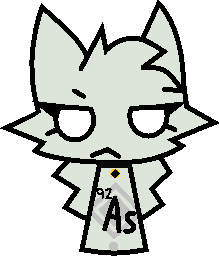

Titanium-46 Disguised as V2 and Tantalum-180m1 disguised as Bill Cipher.
Arsenic-92 is an isotope of Arsenic. She closely resembles baseline Arsenic and Arsenic-73 in appearance, though she wears a near-black synthetic collar with a golden tag.
Unlike most Arsenics, Arsenic-92 never seems to stick around to harass baseline Arsenic. Infact, she mostly finds herself within the Beacon Coalition, as she sees herself as one of them.
Arsenic-92 is much friendlier than the other Arsenics, but that doesn't stop her from being angered easily.
She is most commonly found as a black silhouette for camouflage and intimidation.
She has extraordinarily good eyesight.
Arsenic-92 was intended to go towards the hotel, where she would meet up with the other Arsenics and act more like them. Despite this, she instead payed attention to Beacon Coalition headquarters, disguised as a communication center.

| Symbol | 92As |
|---|---|
| Gender | female |
| Atomic Number | 33 |
| Atomic Mass | 91.9668 |
| Group | Pnictogen |
| Half-life | 300 nanoseconds |
| Decay Product | Selenium-92 |
| Discoverer | Sentinel-II |
| Tags | #Arsenic-92 |
| Role | Observer, Defense |
| Status | Active |